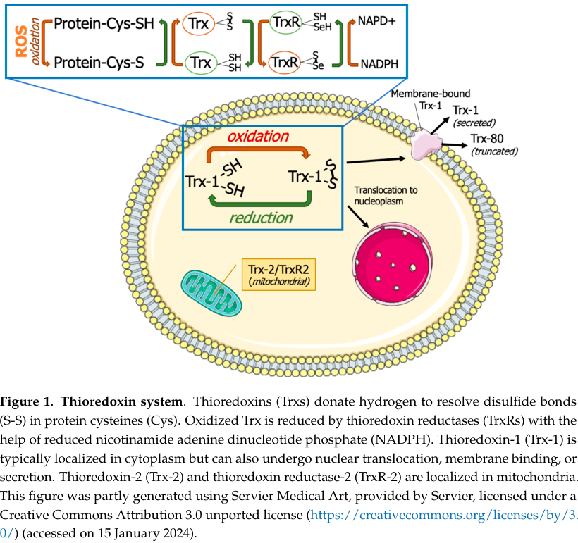

Mouse thioredoxin-1 (Trx1/Txn1) is a small (~12 kDa) ubiquitous oxidoreductase that plays a central role in cellular redox homeostasis. The protein contains the conserved active site motif CGPC (Cys32-Gly-Pro-Cys35) within a canonical thioredoxin fold, enabling it to catalyze dithiol-disulfide exchange reactions. The catalytic mechanism involves nucleophilic attack by Cys32 on substrate disulfide bonds, forming a mixed disulfide intermediate that is resolved by Cys35, releasing the reduced substrate while forming an intramolecular disulfide in Trx1. The oxidized Trx1 is regenerated by thioredoxin reductase using NADPH. Major physiological substrates include peroxiredoxins (for H2O2 detoxification), ribonucleotide reductase (for deoxyribonucleotide synthesis), and oxidized proteins. Mouse Txn1 interacts with TXNIP through its redox-active site, and also interacts with MAP3K5 (ASK1) and CASP3. Trx1 regulates transcription factors AP-1 and NF-kB via interaction with APEX1/Ref-1 and modulates apoptosis. The protein is predominantly cytosolic but translocates to the nucleus upon cellular stress, and is also secreted via a leaderless pathway.
| GO Term | Evidence | Action | Reason |
|---|---|---|---|
|
GO:0005576
extracellular region
|
IEA
GO_REF:0000120 |
ACCEPT |
Summary: IEA annotation based on subcellular location. Thioredoxin is secreted via a leaderless secretory pathway.
Reason: Extracellular localization is well-established for thioredoxin across mammalian species. UniProt annotation confirms secretion via a leaderless pathway.
Supporting Evidence:
UniProtKB:P10639
Secreted by a leaderless secretory pathway
file:mouse/Txn1/Txn1-deep-research-falcon.md
it can also associate with membranes and be **secreted via a leaderless secretory pathway**, with extracellular roles including signaling/chemotaxis
|
|
GO:0005634
nucleus
|
IEA
GO_REF:0000120 |
ACCEPT |
Summary: IEA annotation supported by evidence showing nuclear translocation of Trx1 in response to cellular stress.
Reason: Nuclear localization is well-established. Trx1 translocates to the nucleus where it interacts with Ref-1/APEX1 to regulate AP-1 transcription factor activity.
Supporting Evidence:
UniProtKB:P10639
Note=Translocates from the cytoplasm into the nucleus after phorbol 12-myristate 13-acetate induction (PMA)
file:mouse/Txn1/Txn1-deep-research-falcon.md
Trx1 is described as **mainly cytoplasmic**, but capable of **nuclear translocation** under oxidative/nitrosative stress
|
|
GO:0005737
cytoplasm
|
IEA
GO_REF:0000120 |
ACCEPT |
Summary: IEA annotation consistent with Trx1 being predominantly cytoplasmic.
Reason: Cytoplasmic localization is the primary location for Trx1 in unstressed cells, where it performs its major redox functions.
Supporting Evidence:
UniProtKB:P10639
Predominantly in the cytoplasm in non irradiated cells
|
|
GO:0006351
DNA-templated transcription
|
IEA
GO_REF:0000043 |
MODIFY |
Summary: IEA annotation based on UniProt keyword mapping. Trx1 does not directly participate in transcription but regulates transcription factor DNA-binding activity.
Reason: This term is too direct - Trx1 does not function as a transcription factor or directly in the transcription machinery. Instead, it regulates transcription factor activity through redox mechanisms via interaction with APEX1/Ref-1.
Proposed replacements:
positive regulation of DNA binding
|
|
GO:0015035
protein-disulfide reductase activity
|
IEA
GO_REF:0000120 |
ACCEPT |
Summary: IEA annotation for the core molecular function of thioredoxin. This is the primary enzymatic activity of Trx1.
Reason: This is the defining enzymatic activity of thioredoxin - reducing disulfide bonds in target proteins via its CGPC active site.
Supporting Evidence:
UniProtKB:P10639
-!- FUNCTION: Participates in various redox reactions through the reversible oxidation of its active center dithiol to a disulfide and catalyzes dithiol-disulfide exchange reactions (By similarity)
file:mouse/Txn1/Txn1-deep-research-perplexity.md
The thioredoxin 1 protein encoded by the Txn gene is a small, highly conserved oxidoreductase with a molecular weight of approximately 12 kilodaltons[11].
file:mouse/Txn1/Txn1-deep-research-falcon.md
Trx1 catalyzes the **reduction of oxidized cysteine residues and protein disulfide bonds** in target proteins (i.e., converting a disulfide to two thiols), via its **Cys32/Cys35** catalytic pair
|
|
GO:0019725
cellular homeostasis
|
IEA
GO_REF:0000117 |
MODIFY |
Summary: IEA annotation that is overly general. Trx1 specifically maintains cellular redox homeostasis.
Reason: While Trx1 does contribute to cellular homeostasis, the more specific and accurate term is GO:0045454 (cell redox homeostasis), which precisely describes the function of the thioredoxin system.
Proposed replacements:
cell redox homeostasis
|
|
GO:0005654
nucleoplasm
|
IEA
GO_REF:0000120 |
ACCEPT |
Summary: IEA annotation based on subcellular location data.
Reason: Consistent with nuclear translocation of Trx1 upon cellular stress as demonstrated in multiple studies.
Supporting Evidence:
UniProtKB:P10639
Nucleus {ECO:0000250|UniProtKB:P10599}.
|
|
GO:0005829
cytosol
|
IEA
GO_REF:0000120 |
ACCEPT |
Summary: IEA annotation showing cytosolic localization.
Reason: The cytosol is the primary location for Trx1 in unstressed cells, consistent with its function in maintaining cytosolic protein redox state.
Supporting Evidence:
UniProtKB:P10639
Predominantly in the cytoplasm in non irradiated cells
file:mouse/Txn1/Txn1-deep-research-falcon.md
Trx1 is described as **mainly cytoplasmic**
|
|
GO:0009314
response to radiation
|
IEA
GO_REF:0000107 |
ACCEPT |
Summary: Annotation transferred from human ortholog showing Trx1 responds to ionizing radiation.
Reason: Trx1 translocates to the nucleus in response to ionizing radiation and activates AP-1, as documented in human studies with conserved function in mouse.
Supporting Evidence:
UniProtKB:P10639
Radiation induces translocation of TRX from the cytoplasm to the nucleus
|
|
GO:0042803
protein homodimerization activity
|
IEA
GO_REF:0000107 |
ACCEPT |
Summary: Annotation transferred from human ortholog based on structural evidence.
Reason: Thioredoxin forms homodimers through Cys73 disulfide bonds, as demonstrated in structural studies of human Trx1 with conserved residues in mouse.
Supporting Evidence:
UniProtKB:P10639
Homodimer; disulfide-linked
|
|
GO:0045454
cell redox homeostasis
|
IEA
GO_REF:0000107 |
ACCEPT |
Summary: Core function annotation for thioredoxin's role in maintaining cellular redox balance.
Reason: This is a core function of thioredoxin - maintaining cellular redox homeostasis through its disulfide reductase activity.
Supporting Evidence:
file:mouse/Txn1/Txn1-deep-research-falcon.md
Thioredoxin-1 is a conserved **thiol-disulfide oxidoreductase** that maintains proteins in the reduced state and participates in antioxidant defense and redox signaling
|
|
GO:0047134
protein-disulfide reductase [NAD(P)H] activity
|
IEA
GO_REF:0000107 |
REMOVE |
Summary: Annotation transferred from human ortholog.
Reason: This GO term describes an enzyme that directly uses NAD(P)H to reduce protein disulfides. However, Trx1 itself does not directly use NADPH - it is reduced by thioredoxin reductase which uses NADPH. The correct term is GO:0015035 (protein-disulfide reductase activity).
|
|
GO:0051897
positive regulation of phosphatidylinositol 3-kinase/protein kinase B signal transduction
|
IEA
GO_REF:0000107 |
KEEP AS NON CORE |
Summary: Annotation transferred from human ortholog.
Reason: This represents a downstream signaling effect of Trx1 rather than a core function. The evidence from human studies shows Trx1 is required for H2O2-induced AKT activation.
|
|
GO:0061692
cellular detoxification of hydrogen peroxide
|
IEA
GO_REF:0000107 |
ACCEPT |
Summary: Annotation transferred from human ortholog.
Reason: Trx1 functions in H2O2 detoxification by reducing peroxiredoxins, which directly detoxify H2O2. This is a core function of the thioredoxin system. Falcon notes Trx1 has low intrinsic affinity for H2O2 itself, so the detoxification is via redox relay through peroxiredoxin regeneration rather than direct peroxidase activity.
Supporting Evidence:
file:mouse/Txn1/Txn1-deep-research-falcon.md
it is also described as reducing oxidized **peroxiredoxins** (i.e., supporting peroxide detox/redox cycling indirectly through peroxiredoxin regeneration)
file:mouse/Txn1/Txn1-deep-research-falcon.md
Trx1 is also noted to have low affinity for H2O2 itself, supporting the view that its antioxidant effect is largely via redox relay/partner proteins rather than acting as a direct peroxidase
|
|
GO:0071731
response to nitric oxide
|
IEA
GO_REF:0000107 |
ACCEPT |
Summary: Annotation transferred from human ortholog.
Reason: Trx1 responds to NO by becoming S-nitrosylated at Cys73 and subsequently mediating transnitrosation of target proteins like caspase-3.
Supporting Evidence:
UniProtKB:P10639
Plays a role in the reversible S-nitrosylation of cysteine residues in target proteins, and thereby contributes to the response to intracellular nitric oxide
|
|
GO:0005829
cytosol
|
TAS
Reactome:R-MMU-1250256 |
ACCEPT |
Summary: Reactome annotation for TXNIP release from oxidized thioredoxin in cytosol.
Reason: The TXNIP-Trx1 interaction occurs in the cytosol and is well-established.
|
|
GO:0009314
response to radiation
|
ISS
GO_REF:0000024 |
ACCEPT |
Summary: ISS annotation based on sequence similarity to human TXN.
Reason: Conserved function based on high sequence similarity to human thioredoxin.
|
|
GO:0043388
positive regulation of DNA binding
|
ISS
GO_REF:0000024 |
ACCEPT |
Summary: ISS annotation showing Trx1 positively regulates AP-1 DNA binding activity.
Reason: Trx1 regulates AP-1 DNA binding through its interaction with Ref-1/APEX1, a function conserved between human and mouse. Falcon deep research adds that thioredoxin is also required for NF-kB DNA binding, consistent with a broader role in keeping transcription-factor cysteines in a reduced, DNA-binding-competent state.
Supporting Evidence:
UniProtKB:P10639
Induces the FOS/JUN AP-1 DNA binding activity in ionizing radiation (IR) cells through its oxidation/reduction status and stimulates AP-1 transcriptional activity (By similarity)
file:mouse/Txn1/Txn1-deep-research-falcon.md
thioredoxin is also noted as required for **NF-κB binding to DNA**, pointing to a mechanistic role in transcriptional redox regulation
|
|
GO:0043066
negative regulation of apoptotic process
|
ISS
GO_REF:0000024 |
NEW |
Summary: Trx1 inhibits apoptosis by S-nitrosylating caspase-3, and by binding/ inhibiting the apoptosis signal-regulating kinase ASK1 (MAP3K5) under basal conditions.
Reason: Trx1 inhibits caspase-3 activity through S-nitrosylation, thereby preventing apoptosis. This function is conserved from human ortholog. Falcon deep research additionally documents the ASK1/TXNIP axis, in which thioredoxin binds and suppresses ASK1 basally; displacement by TXNIP promotes oxidative-stress and apoptotic signaling.
Supporting Evidence:
UniProtKB:P10639
Nitrosylates the active site Cys of CASP3 in response to nitric oxide (NO), and thereby inhibits caspase-3 activity
file:mouse/Txn1/Txn1-deep-research-falcon.md
Thioredoxin is described as binding and inhibiting **ASK1** under basal conditions; displacement or inactivation of thioredoxin (e.g., by TXNIP) promotes oxidative stress signaling and downstream outcomes (e.g., apoptosis/inflammasome-linked signaling)
|
|
GO:0035605
peptidyl-cysteine S-nitrosylase activity
|
ISS
GO_REF:0000024 |
NEW |
Summary: Trx1 acts as a transnitrosylase, transferring an NO group from its Cys-nitrosylated active center to a cysteine of target proteins such as caspase-3.
Reason: UniProt documents that Trx1 nitrosylates the active-site Cys of CASP3 in response to NO, which is precisely a peptidyl-cysteine S-nitrosylase (transnitrosylase) molecular function. This is the MF underlying the third core function and is conserved from the human ortholog. Added with ISS evidence on GO_REF:0000024 (manual ortholog transfer) rather than as a deep-research-only annotation.
Supporting Evidence:
UniProtKB:P10639
Nitrosylates the active site Cys of CASP3 in response to nitric oxide (NO), and thereby inhibits caspase-3 activity
|
Q: What is the relative contribution of cytosolic vs nuclear Trx1 to cellular redox homeostasis in mouse tissues?
Q: How is Trx1 secretion regulated in mouse and what are the primary extracellular functions?
Experiment: Quantitative proteomics to identify the complete Trx1 substrate repertoire under different stress conditions in mouse cells
Hypothesis: Trx1 has condition-specific substrates that change depending on the type of cellular stress.
Type: Quantitative proteomics
The research report should be a detailed narrative explaining the function, biological processes, and localization of the gene product. Citations should be given for all claims.
You should prioritize authoritative reviews and primary scientific literature when conducting research. You can supplement
this with annotations you find in gene/protein databases, but these can be outdated or inaccurate.
We are specifically interested in the primary function of the gene - for enzymes, what reaction is catalyzed, and what is the substrate specificity? For transporters, what is the substrate? For structural proteins or adapters, what is the broader structural role? For signaling molecules, what is the role in the pathway.
We are interested in where in or outside the cell the gene product carries out its function.
We are also interested in the signaling or biochemical pathways in which the gene functions. We are less interested in broad pleiotropic effects, except where these elucidate the precise role.
Include evidence where possible. We are interested in both experimental evidence as well as inference from structure, evolution, or bioinformatic analysis. Precise studies should be prioritized over high-throughput, where available.
The target protein is thioredoxin-1 (Trx1) encoded by Txn1 (often denoted TXN1/Trx1), the cytosolic thioredoxin isoform in mammals, and is distinct from Txn2/Trx2, the mitochondrial paralog. This mapping is explicitly stated in recent authoritative reviews discussing mammalian thioredoxin isoforms and mouse genetics (Dagdeviren et al., 2023; Shcholok & Eftekharpour, 2024) (dagdeviren2023physiologicalandpathophysiological pages 1-2, shcholok2024insightsintothe pages 1-2). The described catalytic Cys32/Cys35 active site and thioredoxin-family redox role align with the UniProt family/domain assignment in the prompt (dagdeviren2023physiologicalandpathophysiological pages 1-2, shcholok2024insightsintothe pages 1-2).
Thioredoxin-1 is a conserved thiol-disulfide oxidoreductase that maintains proteins in the reduced state and participates in antioxidant defense and redox signaling (dagdeviren2023physiologicalandpathophysiological pages 1-2, shcholok2024insightsintothe pages 1-2). In mammals, thioredoxin exists as compartmentalized systems (cytosolic Trx1 vs mitochondrial Trx2), enabling redox control in different subcellular locales (dagdeviren2023physiologicalandpathophysiological pages 1-2, alokda2023evolutionarilyconservedrole pages 1-2).
Reaction class (what it catalyzes): Trx1 catalyzes the reduction of oxidized cysteine residues and protein disulfide bonds in target proteins (i.e., converting a disulfide to two thiols), via its Cys32/Cys35 catalytic pair (dagdeviren2023physiologicalandpathophysiological pages 1-2, shcholok2024insightsintothe pages 1-2). Mechanistically, Trx1 reduces oxidized protein cysteines by forming a transient mixed disulfide intermediate, followed by thiol–disulfide exchange (described as a fast “kiss-and-run” mechanism) that leaves the substrate reduced and Trx1 oxidized (shcholok2024insightsintothe pages 1-2, shcholok2024insightsintothe pages 2-4).
Catalytic motif: Reviews report the active-site CXXC motif around residues Cys32 and Cys35, with motif notation appearing as Cys32–Gly–Pro–Cys35 (and minor notation variants in the literature) (shcholok2024insightsintothe pages 1-2, shcholok2024insightsintothe pages 2-4, alokda2023evolutionarilyconservedrole pages 1-2).
Electron source / redox partner system: Oxidized Trx1 is regenerated by thioredoxin reductase (TrxR; cytosolic TXNRD1 in mammals) using reducing equivalents ultimately derived from NADPH. Thus, the canonical electron flow is NADPH → TrxR → Trx1 → substrate disulfide (shcholok2024insightsintothe pages 1-2, shcholok2024insightsintothe pages 2-4, alokda2023evolutionarilyconservedrole pages 1-2). A schematic depiction of this system is shown in a 2024 review figure (shcholok2024insightsintothe media 8096d9a4).
Substrate breadth / specificity: The retrieved evidence emphasizes Trx1 as a broadly acting disulfide reductase rather than a narrow-specificity enzyme, donating electrons to multiple protein targets including antioxidant systems; it is also described as reducing oxidized peroxiredoxins (i.e., supporting peroxide detox/redox cycling indirectly through peroxiredoxin regeneration) (dagdeviren2023physiologicalandpathophysiological pages 1-2, shcholok2024insightsintothe pages 2-4). Precise kinetic constants (Km/kcat), redox potentials, or a complete substrate list were not present in the retrieved excerpts.
Trx1 is described as mainly cytoplasmic, but capable of nuclear translocation under oxidative/nitrosative stress; it can also associate with membranes and be secreted via a leaderless secretory pathway, with extracellular roles including signaling/chemotaxis (shcholok2024lessonsfromthe pages 3-5, shcholok2024insightsintothe pages 4-5, shcholok2024insightsintothe pages 16-17). These properties are relevant for interpreting phenotypes in inflammation, vascular biology, and tissue injury models.
A 2024 review focused on murine knockout and tissue-specific models highlights that constitutive global deletion of the thioredoxin system is incompatible with embryogenesis, motivating conditional knockouts to dissect organ-specific functions (Shcholok & Eftekharpour, 2024; Biology, published Mar 2024; https://doi.org/10.3390/biology13030180) (shcholok2024insightsintothe pages 1-2, shcholok2024insightsintothe pages 9-10). The same review presents a figure summarizing organ phenotypes across thioredoxin-system knockouts (shcholok2024insightsintothe media 22c625f5).
A 2023 Antioxidants & Redox Signaling review clarifies key constraints on TXNIP–thioredoxin interaction, including the requirement that thioredoxin be in a reduced state for TXNIP binding, and reinforces compartmentalization into Txn1 (cytoplasmic) and Txn2 (mitochondrial) systems (Dagdeviren et al., published Feb 2023; https://doi.org/10.1089/ars.2022.0022) (dagdeviren2023physiologicalandpathophysiological pages 1-2). In the same review excerpt, thioredoxin is also noted as required for NF-κB binding to DNA, pointing to a mechanistic role in transcriptional redox regulation (dagdeviren2023physiologicalandpathophysiological pages 1-2).
A 2024 primary study in Cell Death Discovery (published Feb 2024; https://doi.org/10.1038/s41420-024-01848-0) tested Trx1 gain- and loss-of-function in the substantia nigra pars compacta in a mouse MPTP model. MPTP was administered at 30 mg/kg i.p. once daily, and Trx1 manipulation altered motor behavior, dopaminergic neuron integrity (TH), α-synuclein levels, and autophagy/lysosome pathway markers (gu2024thioredoxin1decreasesalphasynuclein pages 1-3, gu2024thioredoxin1decreasesalphasynuclein pages 3-5). This study provides a recent, direct example of Txn1/Trx1 functional impact in a mammalian disease-relevant context.
Thioredoxin is described as binding and inhibiting ASK1 under basal conditions; displacement or inactivation of thioredoxin (e.g., by TXNIP) promotes oxidative stress signaling and downstream outcomes (e.g., apoptosis/inflammasome-linked signaling) (alokda2023evolutionarilyconservedrole pages 2-4). Additional review evidence highlights ASK1-related regulatory roles of thioredoxin in apoptosis contexts (shcholok2024insightsintothe pages 16-17).
Thioredoxin is described as being required for NF-κB binding to DNA, consistent with a role in maintaining transcription factor cysteines in a reduced, DNA-binding competent state (dagdeviren2023physiologicalandpathophysiological pages 1-2).
Reduced Trx donates electrons to peroxiredoxins, linking Txn1/Trx1 to peroxide detoxification and redox cycling (shcholok2024insightsintothe pages 2-4, alokda2023evolutionarilyconservedrole pages 1-2). Importantly, Trx1 is also noted to have low affinity for H2O2 itself, supporting the view that its antioxidant effect is largely via redox relay/partner proteins rather than acting as a direct peroxidase (shcholok2024insightsintothe pages 1-2).
Mouse genetic loss of Txn1 is described as causing early embryonic lethality; embryos show growth retardation around the blastocyst stage (~E3.5) and defects in trophoblast formation/hatching, indicating a nonredundant requirement for Trx1 during early development (dagdeviren2023physiologicalandpathophysiological pages 1-2, shcholok2024lessonsfromthe pages 7-8).
In a tamoxifen-inducible global Trx1 depletion model, mice survived up to 30 days post-injection with mean survival ~15 days, accompanied by ~30% wet-mass decrease and ~50% reduction in splenocyte count, with increased apoptotic spleen cells (shcholok2024lessonsfromthe pages 8-10, shcholok2024lessonsfromthe pages 7-8). These data indicate Trx1 is not only developmentally essential but also required for adult tissue homeostasis.
Cardiomyocyte-specific Trx1 knockout (Trx1fl/fl × Myh6-Cre) caused dramatic cardiac pathology with median survival 25.5 days, ~two-fold cardiomyocyte hypertrophy, increased apoptosis and oxidative damage, and nearly two-fold increase in caspase-3 levels (shcholok2024insightsintothe pages 9-10, shcholok2024lessonsfromthe pages 8-10). A phenotype summary diagram is included in a 2024 review figure (shcholok2024insightsintothe media 22c625f5).
By contrast, liver-specific Trx1/TrxR1 suppression is reported as comparatively nonlethal, with ~15% lethality, enlarged livers due to hepatocyte proliferation, and compensatory de novo glutathione synthesis; however, hepatocytes were reported to be unable to efficiently reduce GSSG, indicating persistent alterations in redox capacity (shcholok2024insightsintothe pages 9-10, shcholok2024lessonsfromthe pages 8-10).
The 2024 MPTP study demonstrates an implementation where Trx1 is experimentally modulated (overexpression vs knockdown) to test therapeutic-like hypotheses. Trx1 overexpression improved motor performance (rotarod/grip strength), preserved TH-positive neurons, and reduced α-synuclein accumulation; knockdown produced the opposite direction of effects (gu2024thioredoxin1decreasesalphasynuclein pages 1-3, gu2024thioredoxin1decreasesalphasynuclein pages 3-5). Mechanistically, Trx1 impacted autophagy–lysosome flux and related markers (LC3 II/I, p62, PINK1/Parkin, LAMP2, cathepsin D), supported by EM and tandem fluorescent LC3 assays in PC12 cells (gu2024thioredoxin1decreasesalphasynuclein pages 5-6, gu2024thioredoxin1decreasesalphasynuclein pages 3-5).
Reviews in 2023–2024 frame Trx1 as a redox regulator involved in inflammatory and oxidative-stress pathology, and discuss the thioredoxin system (including Trx1 and its reductase) as a potential therapeutic axis (shcholok2024insightsintothe pages 1-2). While many translational efforts focus on the system broadly (including TXNRD1 and TXNIP), the mouse genetic evidence (essentiality; organ-specific phenotypes) provides a practical boundary condition for therapeutic targeting: systemic suppression risks toxicity whereas context-/cell-specific modulation may be viable (shcholok2024insightsintothe pages 9-10, shcholok2024lessonsfromthe pages 8-10).
A key perspective emphasized in 2024 synthesis of murine models is that identification of direct Trx1 targets remains technically challenging, meaning that phenotypes from precise genetic models (tissue-specific knockouts, inducible depletion) are especially important for assigning physiological roles to Trx1 in vivo (shcholok2024insightsintothe pages 1-2). This view aligns with the 2023 TXNIP-focused synthesis that stresses mechanistic specificity (e.g., TXNIP binds reduced thioredoxin; redox interaction is state-dependent), cautioning against overly broad “antioxidant” interpretations that ignore redox-state and compartmentalization (dagdeviren2023physiologicalandpathophysiological pages 1-2).
A schematic of the canonical thioredoxin electron-transfer system (NADPH→TrxR→Trx1→substrates) and a phenotype summary across knockout models are available from the 2024 review figures (shcholok2024insightsintothe media 8096d9a4, shcholok2024insightsintothe media 22c625f5).
The following table consolidates identity, mechanism, localization, pathways, and quantitative mouse phenotypes.
| Aspect | Key points | Evidence type/model | Quantitative/statistical details (if any) | Primary source (include DOI URL and year) |
|---|---|---|---|---|
| Identity / disambiguation | Mouse Txn1 encodes thioredoxin-1 (Trx1), the cytoplasmic thioredoxin isoform, distinct from mitochondrial Txn2/Trx2; member of the thioredoxin family with conserved catalytic Cys residues. (dagdeviren2023physiologicalandpathophysiological pages 1-2, shcholok2024insightsintothe pages 1-2) | Review synthesis of mammalian thioredoxin isoforms and mouse genetics | Txn1 loss in mice is essential for development; no alternate gene assignment indicated. (dagdeviren2023physiologicalandpathophysiological pages 1-2, shcholok2024lessonsfromthe pages 7-8) | Shcholok & Eftekharpour, Biology (2024), https://doi.org/10.3390/biology13030180; Dagdeviren et al., Antioxid Redox Signal (2023), https://doi.org/10.1089/ars.2022.0022 |
| Catalytic motif / mechanism | Active-site motif reported as Cys32-Gly/Pro-Gly-Cys35 within the conserved thioredoxin CXXC center; Trx1 reduces oxidized protein cysteines/disulfides via transient mixed-disulfide formation and sequential electron transfer (“kiss-and-run” thiol-disulfide exchange). (shcholok2024insightsintothe pages 1-2, shcholok2024insightsintothe pages 2-4, alokda2023evolutionarilyconservedrole pages 1-2) | Mechanistic review drawing on structural/biochemical literature | Conserved catalytic cysteines at C32/C35; no kinetic constants provided in retrieved evidence. (dagdeviren2023physiologicalandpathophysiological pages 1-2, alokda2023evolutionarilyconservedrole pages 2-4) | Shcholok & Eftekharpour, Biology (2024), https://doi.org/10.3390/biology13030180; AlOkda & Van Raamsdonk, Antioxidants (2023), https://doi.org/10.3390/antiox12040944 |
| Electron donor system | Reduced Trx1 is regenerated by thioredoxin reductase (TrxR/TXNRD1 in cytosol) using electrons from NADPH; this is the core thioredoxin system transferring reducing equivalents to client proteins. (shcholok2024insightsintothe pages 1-2, shcholok2024insightsintothe pages 2-4, alokda2023evolutionarilyconservedrole pages 1-2, shcholok2024insightsintothe media 8096d9a4) | Reviews and schematic pathway summary | Flow of reducing equivalents: NADPH → TrxR → Trx1 → substrate disulfides. (shcholok2024insightsintothe media 8096d9a4) | Shcholok & Eftekharpour, Biology (2024), https://doi.org/10.3390/biology13030180; AlOkda & Van Raamsdonk, Antioxidants (2023), https://doi.org/10.3390/antiox12040944 |
| Major substrates / redox targets | Trx1 reduces protein disulfides broadly and donates electrons to peroxiredoxins; thioredoxin is also reported as required for NF-κB DNA binding and participates in the ASK1/TXNIP stress-signaling axis. (dagdeviren2023physiologicalandpathophysiological pages 1-2, shcholok2024insightsintothe pages 2-4, alokda2023evolutionarilyconservedrole pages 2-4, shcholok2024insightsintothe pages 5-6) | Review evidence plus pathway-focused synthesis | No enzyme-wide substrate specificity constants given; mechanistic breadth emphasized rather than narrow substrate selectivity. (dagdeviren2023physiologicalandpathophysiological pages 1-2, shcholok2024insightsintothe pages 5-6) | Dagdeviren et al., Antioxid Redox Signal (2023), https://doi.org/10.1089/ars.2022.0022; Shcholok & Eftekharpour, Biology (2024), https://doi.org/10.3390/biology13030180 |
| ASK1 / TXNIP axis | Thioredoxin binds and suppresses ASK1 under basal conditions; TXNIP can bind reduced thioredoxin and displace/inactivate it, promoting oxidative-stress signaling, apoptosis, and inflammasome-linked responses. (shcholok2024insightsintothe pages 16-17, alokda2023evolutionarilyconservedrole pages 2-4) | Review of signaling mechanism | Directional pathway evidence; no mouse-wide effect size provided in retrieved excerpts. (shcholok2024insightsintothe pages 16-17, alokda2023evolutionarilyconservedrole pages 2-4) | Shcholok & Eftekharpour, Biology (2024), https://doi.org/10.3390/biology13030180; AlOkda & Van Raamsdonk, Antioxidants (2023), https://doi.org/10.3390/antiox12040944 |
| Localization | Trx1 is mainly cytosolic, can translocate to the nucleus under oxidative/nitrosative stress, can associate with membranes, and can be secreted through a leaderless pathway; secreted Trx1/Trx-80 participates in extracellular signaling/chemotaxis. (shcholok2024lessonsfromthe pages 3-5, shcholok2024insightsintothe pages 4-5, shcholok2024insightsintothe pages 16-17) | Review of cell biology and extracellular thioredoxin literature | Qualitative localization summary; no percentage-by-compartment reported in retrieved evidence. (shcholok2024lessonsfromthe pages 3-5, shcholok2024insightsintothe pages 4-5) | Shcholok & Eftekharpour, Biology (2024), https://doi.org/10.3390/biology13030180 |
| Whole-body constitutive loss | Global Txn1 loss is embryonic lethal; Trx1-null embryos show early growth retardation and trophoblast/hatching defects, indicating an indispensable developmental role. (shcholok2024insightsintothe pages 16-17, dagdeviren2023physiologicalandpathophysiological pages 1-2, shcholok2024lessonsfromthe pages 7-8) | Mouse knockout genetics | Embryonic defects evident by blastocyst stage (~E3.5); TrxR1 nulls also die in early embryogenesis (~E8.5–E10.5 depending on allele). (shcholok2024lessonsfromthe pages 7-8) | Shcholok & Eftekharpour, preprint (2024), https://doi.org/10.20944/preprints202401.1118.v1; Dagdeviren et al., Antioxid Redox Signal (2023), https://doi.org/10.1089/ars.2022.0022 |
| Tamoxifen-inducible global depletion | Inducible global Trx1 depletion in mice causes rapid systemic decline, weight loss, lymphoid depletion, and shortened survival, demonstrating continued postnatal requirement for Txn1. (shcholok2024lessonsfromthe pages 8-10, shcholok2024lessonsfromthe pages 7-8) | Tamoxifen-inducible global knockout/depletion mouse model | Survival up to 30 days post-injection; mean survival 15 days; ~30% wet-mass loss; ~50% decrease in splenocyte count. (shcholok2024lessonsfromthe pages 8-10, shcholok2024lessonsfromthe pages 7-8) | Shcholok & Eftekharpour, preprint (2024), https://doi.org/10.20944/preprints202401.1118.v1 |
| Heart-specific knockout phenotype | Cardiomyocyte-specific Trx1 loss causes severe dilated/hypertrophic cardiomyopathy, apoptosis, oxidative damage, and early death, supporting a key myocardial redox-homeostatic role. (shcholok2024lessonsfromthe pages 8-10, shcholok2024insightsintothe pages 9-10) | Myh6-Cre; Trx1 flox/flox mouse | Median survival 25.5 days; cardiomyocytes ~2-fold larger; nearly 2-fold increase in caspase-3; increased TUNEL positivity; LV ejection fraction decreased (direction reported, exact EF not given in excerpt). (shcholok2024lessonsfromthe pages 8-10, shcholok2024insightsintothe pages 9-10) | Shcholok & Eftekharpour, Biology (2024), https://doi.org/10.3390/biology13030180 |
| Liver-specific effects / compensation | Liver-specific Trx1/TrxR1 suppression is comparatively nonlethal because hepatocytes compensate via de novo glutathione synthesis and Nrf2 activation, but redox handling remains altered. (shcholok2024lessonsfromthe pages 8-10, shcholok2024insightsintothe pages 9-10) | Liver-specific knockout/downregulation mouse models | ~15% lethality reported; adult mice had larger livers due to hepatocyte proliferation; hepatocytes could synthesize GSH de novo but could not reduce GSSG efficiently; TrxR1 liver KO viable >1 year. (shcholok2024lessonsfromthe pages 8-10, shcholok2024insightsintothe pages 9-10) | Shcholok & Eftekharpour, Biology (2024), https://doi.org/10.3390/biology13030180 |
| Recent disease-model application (2024) | In an MPTP Parkinsonism mouse model, Trx1 overexpression improved motor behavior, preserved TH-positive neurons, lowered α-synuclein, and restored autophagy-lysosome flux; Trx1 knockdown had opposite effects. (gu2024thioredoxin1decreasesalphasynuclein pages 5-6, gu2024thioredoxin1decreasesalphasynuclein pages 1-3, gu2024thioredoxin1decreasesalphasynuclein pages 3-5) | Mouse SNpc viral overexpression/knockdown + MPTP 30 mg/kg i.p. daily; cell validation in PC12 | Behavioral statistics included rotarod ANOVA: MPTP F(1,28)=45.86, P<0.001; genotype F(1,28)=73.57, P<0.001; interaction F(1,28)=8.050, P<0.05; biochemical analyses often n=6, behavior n=8. (gu2024thioredoxin1decreasesalphasynuclein pages 1-3, gu2024thioredoxin1decreasesalphasynuclein pages 3-5) | Gu et al., Cell Death Discovery (2024), https://doi.org/10.1038/s41420-024-01848-0 |
Table: This table summarizes the core biochemical function, localization, signaling roles, and mouse-model phenotypes of mouse Txn1/Trx1 using evidence retrieved from recent reviews and primary studies. It is useful as a compact evidence map linking mechanism to in vivo consequence.
References
(dagdeviren2023physiologicalandpathophysiological pages 1-2): Sezin Dagdeviren, Richard T. Lee, and Ning Wu. Physiological and pathophysiological roles of thioredoxin interacting protein: a perspective on redox inflammation and metabolism. Antioxidants & Redox Signaling, 38:442-460, Feb 2023. URL: https://doi.org/10.1089/ars.2022.0022, doi:10.1089/ars.2022.0022. This article has 21 citations and is from a domain leading peer-reviewed journal.
(shcholok2024insightsintothe pages 1-2): Tetiana Shcholok and Eftekhar Eftekharpour. Insights into the multifaceted roles of thioredoxin-1 system: exploring knockout murine models. Biology, 13:180, Mar 2024. URL: https://doi.org/10.3390/biology13030180, doi:10.3390/biology13030180. This article has 14 citations.
(alokda2023evolutionarilyconservedrole pages 1-2): Abdelrahman AlOkda and Jeremy M. Van Raamsdonk. Evolutionarily conserved role of thioredoxin systems in determining longevity. Antioxidants, 12:944, Apr 2023. URL: https://doi.org/10.3390/antiox12040944, doi:10.3390/antiox12040944. This article has 30 citations.
(shcholok2024insightsintothe pages 2-4): Tetiana Shcholok and Eftekhar Eftekharpour. Insights into the multifaceted roles of thioredoxin-1 system: exploring knockout murine models. Biology, 13:180, Mar 2024. URL: https://doi.org/10.3390/biology13030180, doi:10.3390/biology13030180. This article has 14 citations.
(shcholok2024insightsintothe media 8096d9a4): Tetiana Shcholok and Eftekhar Eftekharpour. Insights into the multifaceted roles of thioredoxin-1 system: exploring knockout murine models. Biology, 13:180, Mar 2024. URL: https://doi.org/10.3390/biology13030180, doi:10.3390/biology13030180. This article has 14 citations.
(shcholok2024lessonsfromthe pages 3-5): Tetiana Shcholok and Eftekhar Eftekharpour. Lessons from the thioredoxin-1 knockout mouse models. Unknown journal, Jan 2024. URL: https://doi.org/10.20944/preprints202401.1118.v1, doi:10.20944/preprints202401.1118.v1.
(shcholok2024insightsintothe pages 4-5): Tetiana Shcholok and Eftekhar Eftekharpour. Insights into the multifaceted roles of thioredoxin-1 system: exploring knockout murine models. Biology, 13:180, Mar 2024. URL: https://doi.org/10.3390/biology13030180, doi:10.3390/biology13030180. This article has 14 citations.
(shcholok2024insightsintothe pages 16-17): Tetiana Shcholok and Eftekhar Eftekharpour. Insights into the multifaceted roles of thioredoxin-1 system: exploring knockout murine models. Biology, 13:180, Mar 2024. URL: https://doi.org/10.3390/biology13030180, doi:10.3390/biology13030180. This article has 14 citations.
(shcholok2024insightsintothe pages 9-10): Tetiana Shcholok and Eftekhar Eftekharpour. Insights into the multifaceted roles of thioredoxin-1 system: exploring knockout murine models. Biology, 13:180, Mar 2024. URL: https://doi.org/10.3390/biology13030180, doi:10.3390/biology13030180. This article has 14 citations.
(shcholok2024insightsintothe media 22c625f5): Tetiana Shcholok and Eftekhar Eftekharpour. Insights into the multifaceted roles of thioredoxin-1 system: exploring knockout murine models. Biology, 13:180, Mar 2024. URL: https://doi.org/10.3390/biology13030180, doi:10.3390/biology13030180. This article has 14 citations.
(gu2024thioredoxin1decreasesalphasynuclein pages 1-3): Rou Gu, Liping Bai, Fang Yan, Se Zhang, Xianwen Zhang, Ruhua Deng, Xiansi Zeng, Bo Sun, Xiaomei Hu, Ye Li, and Jie Bai. Thioredoxin-1 decreases alpha-synuclein induced by mptp through promoting autophagy-lysosome pathway. Cell Death Discovery, Feb 2024. URL: https://doi.org/10.1038/s41420-024-01848-0, doi:10.1038/s41420-024-01848-0. This article has 18 citations and is from a peer-reviewed journal.
(gu2024thioredoxin1decreasesalphasynuclein pages 3-5): Rou Gu, Liping Bai, Fang Yan, Se Zhang, Xianwen Zhang, Ruhua Deng, Xiansi Zeng, Bo Sun, Xiaomei Hu, Ye Li, and Jie Bai. Thioredoxin-1 decreases alpha-synuclein induced by mptp through promoting autophagy-lysosome pathway. Cell Death Discovery, Feb 2024. URL: https://doi.org/10.1038/s41420-024-01848-0, doi:10.1038/s41420-024-01848-0. This article has 18 citations and is from a peer-reviewed journal.
(alokda2023evolutionarilyconservedrole pages 2-4): Abdelrahman AlOkda and Jeremy M. Van Raamsdonk. Evolutionarily conserved role of thioredoxin systems in determining longevity. Antioxidants, 12:944, Apr 2023. URL: https://doi.org/10.3390/antiox12040944, doi:10.3390/antiox12040944. This article has 30 citations.
(shcholok2024lessonsfromthe pages 7-8): Tetiana Shcholok and Eftekhar Eftekharpour. Lessons from the thioredoxin-1 knockout mouse models. Unknown journal, Jan 2024. URL: https://doi.org/10.20944/preprints202401.1118.v1, doi:10.20944/preprints202401.1118.v1.
(shcholok2024lessonsfromthe pages 8-10): Tetiana Shcholok and Eftekhar Eftekharpour. Lessons from the thioredoxin-1 knockout mouse models. Unknown journal, Jan 2024. URL: https://doi.org/10.20944/preprints202401.1118.v1, doi:10.20944/preprints202401.1118.v1.
(gu2024thioredoxin1decreasesalphasynuclein pages 5-6): Rou Gu, Liping Bai, Fang Yan, Se Zhang, Xianwen Zhang, Ruhua Deng, Xiansi Zeng, Bo Sun, Xiaomei Hu, Ye Li, and Jie Bai. Thioredoxin-1 decreases alpha-synuclein induced by mptp through promoting autophagy-lysosome pathway. Cell Death Discovery, Feb 2024. URL: https://doi.org/10.1038/s41420-024-01848-0, doi:10.1038/s41420-024-01848-0. This article has 18 citations and is from a peer-reviewed journal.
(shcholok2024insightsintothe pages 5-6): Tetiana Shcholok and Eftekhar Eftekharpour. Insights into the multifaceted roles of thioredoxin-1 system: exploring knockout murine models. Biology, 13:180, Mar 2024. URL: https://doi.org/10.3390/biology13030180, doi:10.3390/biology13030180. This article has 14 citations.

This report provides a thorough examination of the thioredoxin 1 (Txn1) gene product in mouse (Mus musculus), focusing on its molecular structure, enzymatic mechanism, subcellular localization, target substrates, and diverse biological functions. Thioredoxin 1 represents a highly conserved redox-active protein that maintains cellular reducing environments and participates in critical signaling pathways controlling cell survival, proliferation, and apoptosis. The protein functions as both an antioxidant enzyme and a redox-dependent signaling molecule, interacting with numerous target proteins to regulate fundamental cellular processes. This analysis synthesizes current evidence regarding the biochemical catalysis of thioredoxin, its spatial organization within cells, its role in protecting against oxidative stress, and its participation in gene expression regulation through interaction with transcription factors.
The thioredoxin 1 protein encoded by the Txn gene is a small, highly conserved oxidoreductase with a molecular weight of approximately 12 kilodaltons[11]. The protein possesses a characteristic tertiary structure termed the thioredoxin fold, which consists of five beta-strands forming the internal core of the protein, surrounded by four alpha-helices and a short stretch of helix encompassing the central beta-sheets[16]. This distinctive three-dimensional arrangement creates a stable protein scaffold that has been preserved throughout evolution from prokaryotes to eukaryotes, demonstrating the fundamental importance of this structural organization for redox catalysis. The thioredoxin fold represents a minimal yet versatile structural element that supports oxidation, reduction, and isomerization of disulfide bonds, and this structural framework has proven sufficiently adaptable to accommodate diverse catalytic functions depending on the specific cellular environment in which thioredoxin operates[52].
At the heart of thioredoxin's catalytic capacity lies its active site, characterized by a highly conserved CXXC motif where X represents the amino acids glycine and proline in the mouse thioredoxin sequence[11]. The thioredoxin fold creates a distinctive structural environment around the active site cysteine residues, with the N-terminal cysteine (Cys32) of the CXXC motif positioned somewhat exposed to the solvent, while the C-terminal cysteine (Cys35) remains more deeply buried within the protein structure[10]. This differential positioning of the two active site cysteines proves critical for the catalytic mechanism, as it enables sequential nucleophilic attacks required for thiol-disulfide exchange reactions. The chemical environment surrounding the active site, including the pKa values of the cysteine thiolates, represents a crucial determinant of thioredoxin reactivity and distinguishes it from other thiol-disulfide oxidoreductases such as protein disulfide isomerase or DsbA[10]. The poor stabilization of both cysteine thiolates in thioredoxin renders it a potent reducing agent compared to oxidizing enzymes that stabilize their cysteine thiolates more extensively[10].
The active site architecture of thioredoxin demonstrates remarkable sophistication in its structural organization. The CXXC motif functions as a rheostat controlling the redox potential of the active-site disulfide bond through variations in the intervening amino acid residues and the local electrostatic environment[49]. The reduction potential of thioredoxin is determined by complex interactions between pH-dependent components related to thiol pKa values and pH-independent components arising from structural features that remain incompletely characterized[49]. Studies examining the CXXC motif across diverse thiol-disulfide oxidoreductases have revealed that the identity of the amino acids flanking the catalytic cysteines profoundly influences both the reduction potential and the substrate specificity of these enzymes[49]. In thioredoxin specifically, the reduction potential falls in the range characteristic of strong reducing agents, enabling it to function effectively in reducing disulfide bonds in diverse substrate proteins[10]. This chemical property positions thioredoxin as a general-purpose reductant capable of interacting with numerous target proteins bearing disulfide bonds requiring reduction.
Thioredoxin catalyzes thiol-disulfide exchange reactions through a well-characterized bimolecular nucleophilic substitution mechanism involving sequential cysteine residue attacks on target disulfide bonds[10]. The reaction proceeds in discrete steps beginning with binding of the substrate protein to thioredoxin, followed by nucleophilic attack of the N-terminal cysteine residue (Cys32-S⁻) on the disulfide bond of the target protein[10]. This initial nucleophilic attack generates an intermolecular mixed disulfide intermediate in which thioredoxin remains covalently linked to the partially reduced substrate protein through a disulfide bond. Subsequently, the C-terminal cysteine residue (Cys35-S⁻), which is buried within the protein structure, attacks the mixed disulfide intermediate, completing the transfer of reducing equivalents and resulting in release of the fully reduced substrate protein while thioredoxin itself becomes oxidized[10]. This sequential mechanism ensures directional electron transfer from thioredoxin to target substrates and enables thioredoxin to discriminate between productive and nonproductive reaction pathways[7].
The specificity of thioredoxin in its interactions with target proteins derives from multiple factors beyond simple chemical reactivity. Conformational changes occurring during the thiol-disulfide exchange reaction at the thioredoxin-substrate interface enable precise orientation of catalytic residues and control of reaction regioselectivity[7]. The pKa values of cysteine residues in both thioredoxin and its target proteins critically influence which cysteines undergo nucleophilic attack and in what sequence, thereby ensuring productive catalysis rather than futile side reactions[7]. Hydrogen bonding networks involving thioredoxin active site residues stabilize the thiolate form of cysteine, facilitating its nucleophilic reactivity while preventing unwanted side reactions[7]. These structural and chemical determinants collectively govern the exquisite specificity of thioredoxin in selecting among numerous potential targets within the cellular environment and ensuring that reducing equivalents flow in the intended direction.
The thioredoxin catalytic cycle depends critically upon regeneration of the reduced form of thioredoxin through the action of thioredoxin reductase (TrxR), forming an integrated enzyme system that maintains cellular reducing power[3][8]. Thioredoxin reductase represents an essential homodimeric flavoprotein that catalyzes the NADPH-dependent reduction of oxidized thioredoxin, thereby completing the catalytic cycle and enabling continued thioredoxin function[3]. The electron transfer pathway proceeds through an intricate mechanism in which NADPH donates reducing equivalents to the flavin adenine dinucleotide (FAD) cofactor bound within thioredoxin reductase, ultimately leading to the reduction of an active-site disulfide bond within the enzyme[3]. In mammalian thioredoxin reductases, the catalytic cycle involves a large conformational change and transfer of reducing equivalents to a mobile C-terminal selenocysteine-containing tetrapeptide of the opposing subunit in the thioredoxin reductase dimer, which then reduces the disulfide bond within thioredoxin itself[3]. This multi-step electron transfer pathway utilizes thermal motion at physiological temperature to enable the thioredoxin shuttle to transiently access the active site of thioredoxin reductase[6].
The structural dynamics underlying thioredoxin reductase catalysis have been elucidated through a combination of crystallographic studies, molecular dynamics simulations, and biochemical kinetic analysis. The oxidized shuttle of thioredoxin reductase, bearing a disulfide between a cysteine and selenocysteine residue, must travel a distance exceeding twenty angstroms from its sequestered position deep within the protein interior to reach and interact with the bound thioredoxin substrate[6]. Computational molecular dynamics studies demonstrate that thermal motion at body temperature (37°C) enables this conformational change, allowing the oxidized shuttle to transiently access the active site, where reduction by the N-terminal active-site dithiol occurs[6]. Once the shuttle becomes reduced through interaction with the dithiol-containing center, its increased polarity drives the shuttle outward toward the solution interface through spontaneous motion, positioning it to transfer reducing equivalents to incoming thioredoxin molecules[6]. This elegant molecular mechanism represents an adaptation enabling a single enzyme to catalyze reduction of thioredoxin despite the internal active site being too small to accommodate the full thioredoxin substrate, necessitating an intermediary disulfide shuttle.
The separation of thioredoxin and thioredoxin reductase components within the cell into functionally distinct pools amplifies the diversity of cellular redox control. In mammals, distinct isozymes of thioredoxin reductase function in different subcellular compartments, with TrxR1 residing in the cytosol and TrxR2 localizing to mitochondria[3][9]. This compartmentalization enables independent regulation of redox homeostasis in distinct cellular environments with dramatically different oxidizing power and redox requirements. The cytosolic thioredoxin-thioredoxin reductase system maintains a highly reducing environment in the cytoplasm, supporting the numerous redox-dependent processes occurring in this compartment[12]. The mitochondrial thioredoxin-thioredoxin reductase system functions similarly within the mitochondrial matrix, where it plays a crucial role in protecting mitochondrial proteins from oxidative damage and regulating mitochondrial apoptosis signaling[58].
The mouse thioredoxin 1 protein exhibits predominantly cytoplasmic localization, where it exerts primary control over cytosolic redox status[9]. Biochemical studies measuring thioredoxin reductase activity in subcellular fractions from rat liver tissue revealed that TrxR activity, primarily attributable to the TrxR1 isoform and hence associated with thioredoxin 1, appeared highest in cytoplasmic fractions at 1.26 U/mg ± 0.11, compared to mitochondrial fractions at 1.57 U/mg ± 0.19, indicating substantial cytosolic localization of this system[9]. The cytosolic thioredoxin 1 protein can translocate to the nucleus under certain conditions, where it participates in redox regulation of nuclear transcription factors and DNA repair processes[14]. Evidence demonstrates that phorbol esters efficiently translocate thioredoxin 1 into the HeLa cell nucleus where it interacts with Ref-1 to promote activation of the AP-1 transcription factor through redox modification of conserved cysteine residues[14]. This nuclear translocation ability enables thioredoxin to participate in transcriptional responses to cellular signals and oxidative stress.
The endoplasmic reticulum, despite being a site of intense oxidative activity required for disulfide bond formation during protein folding, demonstrates virtually undetectable thioredoxin reductase activity and minimal thioredoxin presence[9]. This striking compartmentalization reflects the specialized redox environment of the endoplasmic reticulum, which has evolved entirely distinct oxidoreductase systems including protein disulfide isomerase and endoplasmic reticulum oxidoreductase to maintain its oxidizing conditions necessary for oxidative protein folding[9]. The absence of thioredoxin from the endoplasmic reticulum lumen represents an evolutionary adaptation preventing the potent reducing activity of thioredoxin from interfering with the controlled oxidation of nascent proteins required for proper disulfide bond formation[12]. Instead, the cytosolic thioredoxin system remains poised to provide reducing power to substrates emerging from the endoplasmic reticulum following their synthesis and initial folding.
Studies employing transgenic mouse models with inducible expression of thioredoxin 1 "substrate traps" to stabilize intermolecular disulfides with protein substrates have revealed tissue- and cell-specific Trx1-dependent interactions. Following immunoprecipitation and proteomic analysis, researchers identified forty-one homeostatic Trx1 interactions in perinatal mouse lung tissue, including previously characterized substrates such as peroxiredoxin family members and collapsin response mediator protein 2[35]. Application of oxidative stress through perinatal hyperoxia as a model of oxidative injury revealed seventeen additional oxygen-induced Trx1 interactions including several cytoskeletal proteins potentially important for alveolar development[35]. This evidence demonstrates that thioredoxin 1 functions within dynamic networks of protein interactions that expand or contract in response to cellular redox perturbations, enabling responsive adaptation of the proteome to oxidative challenges.
The thioredoxin 1 system reduces an exceptionally diverse array of substrate proteins spanning multiple functional categories, reflecting the central role of thioredoxin in cellular redox regulation. One of the most important thioredoxin 1 substrates comprises the peroxiredoxin family, particularly the two-cysteine peroxiredoxins, which directly reduce hydrogen peroxide and alkyl hydroperoxides[16]. Once peroxiredoxin reduces its target oxidant, thioredoxin 1 restores peroxiredoxin activity by recycling the oxidized form back to its reduced state, establishing a continuous antioxidant relay system[16]. Beyond peroxiredoxins, additional protein substrates of thioredoxin reductase-thioredoxin include glutaredoxins, protein disulfide isomerases, thioredoxin-like proteins, and diverse other oxidoreductases[8]. Nonprotein substrates represent an additional category of thioredoxin 1 targets, including selenite, dehydroascorbate, lipoic acid, ubiquinone, cytochrome c, and certain cancer drugs such as motexafin gadolinium[8].
Among the most thoroughly characterized thioredoxin 1 target proteins are transcription factors requiring thiol-mediated redox modification for DNA binding activity. The transcription factor NF-κB exhibits markedly augmented DNA-binding activity following thioredoxin 1 treatment through direct reduction of Cys-62 within its DNA-binding loop[14]. Under normal conditions, thioredoxin 1 scavenges reactive oxygen species in the cytoplasm and inhibits the degradation of IκB, the inhibitor protein that prevents NF-κB nuclear translocation and gene expression[16]. However, increased reactive oxygen species mediate the degradation of IκB and the nuclear translocation of NF-κB, whereupon nuclear thioredoxin 1 directly reduces a cysteine residue of NF-κB and allows NF-κB-dependent gene expression[16]. This mechanism enables thioredoxin 1 to suppress oxidative stress-induced apoptosis by activating NF-κB-dependent transcription of anti-apoptotic genes.
The activator protein 1 (AP-1) transcription factor complex, composed of c-Jun and c-Fos subunits, represents another critical thioredoxin 1 target with profound consequences for gene expression. Thioredoxin 1 reduces AP-1 cysteines indirectly via the Ref-1 redox factor, thereby increasing the DNA-binding activity of AP-1 to regulate cell growth, differentiation, and apoptosis[16]. Direct physical association between thioredoxin 1 and Ref-1 within the nucleus enables this redox relay, with the interaction requiring intact active-site cysteines of thioredoxin 1[14]. The C-terminal region of thioredoxin 1 appears indispensable for its interaction with Ref-1 and for its reducing activity, suggesting that the physical engagement between these two proteins and the redox catalysis they jointly perform constitute essential components of AP-1 regulation[14].
The hypoxia-inducible factor 1α (HIF-1α) subunit undergoes redox modification catalyzed by thioredoxin 1 and Ref-1 during hypoxic conditions, essential for HIF-1 binding with CBP/p300 coactivators and initiation of hypoxic response element target gene expression[16]. The protein Nrf2, a master regulator of antioxidant response element (ARE)-driven transcription, is activated by thioredoxin 1 through reduction of conserved cysteine residues in the DNA-binding domains of small Maf proteins, thereby enhancing Nrf2-ARE binding[16]. As a result of this feed-forward regulation, oxidative stress leads to increased thioredoxin 1 levels, which in turn activates the transcription factors responsible for inducing even higher levels of thioredoxin 1 and other antioxidant enzymes, creating a positive feedback loop that amplifies antioxidant responses during oxidative stress.
Among the most thoroughly characterized non-enzymatic functions of thioredoxin 1 is its direct inhibition of apoptosis signal-regulating kinase 1 (ASK1), a mitogen-activated protein kinase kinase kinase that activates the c-Jun N-terminal kinase and p38 mitogen-activated protein kinase pathways required for tumor necrosis factor-alpha-induced apoptosis[33]. Through genetic screening approaches, researchers identified thioredoxin as a binding partner of ASK1, with thioredoxin associating with the N-terminal coiled coil domain of ASK1 both in vitro and in vivo[33]. Expression of thioredoxin 1 effectively inhibits ASK1 kinase activity and the subsequent ASK1-dependent apoptosis, while inhibition of thioredoxin 1 results in activation of endogenous ASK1 activity, establishing thioredoxin 1 as a physiological inhibitor of ASK1[33]. Treatment of cells with N-acetyl-L-cysteine, a reducing agent that increases cellular thiols, also inhibits serum withdrawal-, tumor necrosis factor-alpha-, and hydrogen peroxide-induced activation of ASK1 as well as apoptosis, supporting a redox-dependent mechanism underlying thioredoxin 1 inhibition of ASK1[33].
The interaction between thioredoxin 1 and ASK1 demonstrates exquisite redox dependence, with reduced thioredoxin 1 capable of binding and inactivating ASK1, while oxidized thioredoxin 1 cannot effectively inhibit ASK1 activity[33]. This redox-sensitive interaction represents a sophisticated molecular mechanism enabling cells to integrate information about oxidative stress status with apoptotic signaling, such that under normal reducing conditions, thioredoxin 1 maintains ASK1 in an inactive state, but elevated reactive oxygen species oxidizing thioredoxin 1 permit ASK1 activation and induction of apoptosis. This regulatory network has profound implications for cellular responses to oxidative stress, as it enables differentiation between manageable oxidative challenges suppressed through thioredoxin 1 antioxidant activities and severe stress triggering apoptotic elimination of irreparably damaged cells[15].
The expression of thioredoxin 1 undergoes substantial induction in response to diverse oxidative stimuli, including ultraviolet irradiation, cytokine treatment, and exposure to certain chemicals, reflecting the importance of thioredoxin 1 as a cellular stress response protein[18]. This rapid induction of thioredoxin 1 expression enables cells to rapidly augment their antioxidant defense capacity in response to oxidative challenges. Transcriptional regulation of the thioredoxin gene involves the antioxidant responsive element (ARE) and related regulatory sequences recognized by specific transcription factors. Evidence demonstrates that the transcription factor Nrf2 (nuclear factor erythroid 2-related factor 2) binds to ARE sequences in the thioredoxin gene promoter region and activates transcription of thioredoxin in response to oxidative stress[43]. Hemin-induced activation of thioredoxin gene expression occurs through Nrf2 binding to the ARE, with insertion of mutations in the ARE consensus binding sequence abolishing the response to hemin[43]. Overexpression of Nrf2 augments the hemin-induced response to thioredoxin gene activation in a dose-dependent manner, whereas overexpression of a dominant negative mutant of Nrf2 suppresses hemin-induced activation, confirming the role of Nrf2 in thioredoxin regulation[43].
Regulation of thioredoxin 1 also involves metabolic integration through glucose-sensing pathways and insulin signaling. The thioredoxin-interacting protein (TXNIP), an inhibitor of thioredoxin function, is upregulated in response to high glucose concentrations and oxidative stress, serving as a glucose and oxidative stress sensor[40]. Both insulin and insulin-like growth factor 1 downregulate TXNIP expression in glucose-fed conditions, thereby permitting increased thioredoxin 1 activity and redox-dependent processes required for cell proliferation and metabolic adaptation to nutrient availability[40]. This coupling of thioredoxin 1 activity to metabolic state and glucose availability reflects the integration of redox regulation with cellular metabolism and nutrient sensing.
Thioredoxin 1 protein levels also undergo age-related decline in multiple tissues. Studies of transgenic mice constitutively overexpressing thioredoxin 1 revealed significantly higher Trx1 protein levels in all tissues examined in young mice (4-6 months old), with levels elevated 29-54% compared to wild-type littermates[19]. However, the levels of thioredoxin 1 overexpression decreased substantially in middle-aged (14-16 months old) and old (26-28 months old) mice, indicating age-related attenuation of transgene expression[19]. This age-dependent decline in thioredoxin 1 levels may contribute to increased oxidative stress and reduced resistance to oxidative damage characteristic of aging.
Beyond its intracellular functions, thioredoxin 1 can be unconventionally secreted from cells to function as an extracellular signaling molecule with pleiotropic biological activities[24]. The human thioredoxin 1 was originally identified as the adult T cell leukemia-derived factor (ADF), a secreted protein implicated in a wide variety of cell-to-cell communication systems acting as a cytokine or chemokine[24]. The mechanism of secretion of thioredoxin 1 remains largely unconventional, lacking an N-terminal signal peptide that would target it through the classical secretory pathway involving the endoplasmic reticulum and Golgi apparatus[24]. Instead, thioredoxin 1 exits cells through alternative pathways involving direct transfer across the plasma membrane or packaging within plasma membrane-derived microvesicles[24]. Once released into extracellular spaces, thioredoxin 1 can interact with cell surface receptors and modulate cellular responses through redox-dependent and redox-independent mechanisms.
Extracellular thioredoxin 1 has been shown to selectively regulate cytokine receptor signaling through direct redox interaction with specific cell surface proteins[21]. Using mechanism-based kinetic trapping techniques to identify disulfide exchange interactions on the intact surface of living lymphocytes, researchers discovered that thioredoxin 1 catalytically interacts with the tumor necrosis factor receptor superfamily member 8 (TNFRSF8/CD30), a receptor expressed on activated lymphocytes[21]. The redox interaction between extracellular thioredoxin 1 and CD30 proves highly specific for both the cytokine and receptor, and the redox state of CD30 determines its ability to engage the cognate ligand and transduce signals[21]. This discovery reveals that receptor-ligand signaling interactions can be selectively regulated by extracellular redox catalysts, adding a novel dimension to lymphocyte activation and immune regulation.
Thioredoxin 1 plays essential roles in promoting cell proliferation through both antioxidant and signaling functions. Transfection of mouse NIH 3T3 cells with complementary DNA for wild-type human thioredoxin 1 resulted in substantially increased saturation densities compared with vector-transfected cells, indicating enhanced proliferative capacity[57]. Similarly, thioredoxin 1-transfected human MCF-7 breast cancer cells exhibited severalfold increased colony formation in soft agarose, a hallmark assay of transformed phenotype[57]. In contrast, stable transfection of cells with a redox-inactive mutant thioredoxin 1 in which both active-site cysteines were replaced with serines (C32S/C35S) resulted in inhibition of monolayer growth on plastic surfaces and up to 73% inhibition of colony formation by MCF-7 cells in soft agarose[57]. These findings establish that the redox-active catalytic function of thioredoxin 1, rather than structural features of the protein alone, drives enhanced cell proliferation and transformation.
The thioredoxin 1 system operates as a key hub integrating nucleotide biosynthesis with cell proliferation through its role in reducing ribonucleotide reductase, the enzyme responsible for synthesis of deoxynucleotides essential for DNA synthesis[42]. Upon immune cell activation, immune cells reprogram their metabolism toward increased glycolysis and pentose phosphate pathway activity to generate NADPH and biosynthetic precursors required for DNA synthesis[42]. Simultaneously, upregulated thioredoxin 1 shuttles electrons from NADPH to ribonucleotide reductase to support deoxyribonucleotide production, creating a coordinated metabolic and redox response supporting proliferation[42]. Genetic deletion of thioredoxin reductase 1 in activated T cells results in impaired expansion during viral infections and other immune responses, with a recent in vivo CRISPR-Cas9 mutagenesis screen identifying thioredoxin reductase 1 as a positive regulator of the antitumor response of CD8+ T cells[42]. These findings highlight the critical importance of thioredoxin 1 system function for lymphocyte proliferation and immune defense.
The heart represents a tissue particularly sensitive to oxidative stress due to its high metabolic rate and continuous contractile activity, conditions that predispose to reactive oxygen species generation[22]. Transgenic mice with cardiac-specific overexpression of a dominant-negative thioredoxin 1 mutant, in which the disulfide oxidoreductase activity was selectively diminished while other cellular antioxidant mechanisms remained intact, exhibited baseline cardiac hypertrophy[22]. At three months of age, the left ventricular weight-to-body weight ratio and left ventricular weight-to-tibial length ratio were significantly greater in dominant-negative thioredoxin 1 transgenic mice compared to non-transgenic littermates[22]. The left ventricular cardiac myocyte cross-sectional area demonstrated significant enlargement in these animals, with messenger RNA expression of atrial natriuretic factor and alpha-skeletal actin, markers of fetal-type gene expression characteristic of cardiac hypertrophy, substantially elevated[22]. Critically, histological analysis revealed no significant inflammatory cell infiltration or interstitial fibrosis in the hearts of dominant-negative thioredoxin 1 transgenic mice, indicating that the hypertrophy reflected genuine myocyte enlargement rather than pathological remodeling.
When subjected to pressure overload through transverse aortic banding, dominant-negative thioredoxin 1 transgenic mice exhibited exaggerated cardiac hypertrophy compared to non-transgenic controls, with the percentage increase in left ventricular mass significantly greater after one week of aortic banding[22]. This enhanced hypertrophic response persisted after four weeks of sustained pressure overload, establishing that endogenous thioredoxin 1 negatively regulates the extent of cardiac hypertrophy in response to mechanical stress[22]. The mechanisms underlying this protective effect involve thioredoxin 1 interactions with multiple signaling proteins controlling cardiac growth, including upregulation of nuclear respiratory factors 1 and 2 and stimulation of peroxisome proliferator-activated receptor γ coactivator 1-α expression, transcriptional events that promote a healthy metabolic phenotype in cardiomyocytes[11]. Additionally, thioredoxin 1 reduces cysteine residues in histone deacetylase 4, facilitating its nuclear import where it downregulates the activity of transcription factors such as NFAT that mediate cardiac hypertrophy[11].
Thioredoxin 1 also controls microRNA expression patterns in the heart, with evidence indicating that thioredoxin 1 inhibits cardiac hypertrophy by upregulating miR-98/let-7, microRNAs that target hypertrophic signaling pathways[11]. Furthermore, thioredoxin 1 demonstrates the capacity to regulate the expression level of SMYD1, a lysine methyltransferase highly expressed in cardiac muscle tissue, potentially exerting indirect effects on protein methylation patterns that contribute to cardiac protection through mechanisms independent of its oxidoreductase activity[11]. This multi-faceted regulation of cardiac gene expression by thioredoxin 1 reflects the complexity of redox-dependent signaling in cardiac tissue.
The nervous system exhibits particular vulnerability to oxidative stress due to its high lipid content, high metabolic rate, and limited capacity for regeneration of damaged neurons[44]. Numerous studies document altered expression of thioredoxin 1 and thioredoxin reductase in postmortem brain tissue from patients with various neurodegenerative diseases, with decreased thioredoxin 1 levels associated with accumulation of pathological protein aggregates characteristic of disease[44]. In Alzheimer's disease specifically, low levels of thioredoxin 1 occur in association with amyloid-beta peptide accumulation, suggesting that thioredoxin 1 deficiency represents a critical protective factor permitting disease progression[44]. The decreased expression of thioredoxin 1 documented in both the frontal cortex and hippocampal CA1 regions of Alzheimer's disease patients indicates that thioredoxin 1 loss occurs in brain regions most affected by this devastating disease[44]. Interestingly, while thioredoxin 1 levels decrease in Alzheimer's brain tissue, thioredoxin reductase activity may be increased, presumably representing a compensatory mechanism attempting to attenuate activated oxidative stress pathways despite diminished thioredoxin substrate availability[44].
The apoptosis signal-regulating kinase 1 pathway plays a vital role in the pathogenesis of neurodegenerative disorders including Alzheimer's disease, with thioredoxin 1 directly binding to the N-terminal region of ASK1 and maintaining its inactivation under normal conditions[44]. In the oxidative stress state characteristic of neurodegeneration, thioredoxin 1 dissociation from ASK1 permits ASK1 activation, potentially triggering the neuronal death characteristic of these diseases[44]. The thioredoxin-peroxiredoxin system, functioning together to scavenge hydrogen peroxide and protect mitochondrial DNA in the brain against damage caused by oxidative and nitrative stress, appears critical for neuronal survival[44]. Thus, preservation of thioredoxin 1 function through maintenance of adequate thioredoxin reductase activity and transcriptional expression of thioredoxin 1 itself represents a potentially crucial defense mechanism against neurodegeneration.
Thioredoxin 1 participates in base excision repair, the primary DNA repair pathway removing oxidative lesions such as 8-oxoguanine and abasic sites generated by reactive oxygen species[45]. Investigation of thioredoxin 1 knockdown cells demonstrated that reduced thioredoxin 1 expression correlated with impaired base excision repair activity and increased cellular susceptibility to DNA damage induced by nitrosomethylurea, a compound generating lesions processed by base excision repair[45]. The mechanism involves thioredoxin 1 modulation of base excision repair through the p53 downstream gene growth arrest and DNA-damage-inducible protein 45α, with thioredoxin 1 knockdown cells showing decreased expression and interaction of growth arrest and DNA-damage-inducible protein 45α with apurinic/apyrimidinic endonuclease 1[45]. The reduced apurinic/apyrimidinic endonuclease 1 activity observed in thioredoxin 1 knockdown cells suggests that thioredoxin 1 might cooperate in controlling apurinic/apyrimidinic endonuclease 1 function through modulating the p53-mediated base excision repair pathway via the protein-protein interaction between growth arrest and DNA-damage-inducible protein 45α and apurinic/apyrimidinic endonuclease 1[45]. This role of thioredoxin 1 in promoting DNA repair activities protects genomic integrity and prevents accumulation of mutations that could otherwise contribute to cancer development or cellular senescence.
Thioredoxin 1 serves as an essential regulatory component of immune cell responses, with genetic deletion of thioredoxin reductase 1 resulting in impaired expansion of activated T cells during viral infections and other immune challenges[42]. T cell activation involves massive proliferation during thymic development and upon antigen encounter in secondary lymphoid organs, processes accompanied by upregulation of cellular redox regulators including thioredoxin 1 and thioredoxin reductase 1[42]. Upon immune cell activation, immune cells reprogram their redox system and activate the thioredoxin pathway to promote proliferation through sustainment of nucleotide biosynthesis via the pentose phosphate pathway[39]. The thioredoxin 1-thioredoxin reductase 1 system proves largely dispensable for homeostatic maintenance of naive T cells, likely due to their modest requirement for deoxynucleotide biosynthesis through the pentose phosphate pathway[42]. However, the thioredoxin 1 system becomes critically important upon T cell activation, with the transcription factor c-Myc mediating thioredoxin-interacting protein repression and thereby contributing to activation of the thioredoxin 1 system upon T cell receptor triggering[42].
In addition to its role in promoting T cell proliferation, thioredoxin 1 regulates the NF-κB and NLRP3 inflammasome pathways critical for inflammatory responses in myeloid cells[39][42]. Thioredoxin 1 positively regulates the binding of NF-κB to target DNA, promoting transcriptional activity of target genes encoding pro-inflammatory cytokines including pro-interleukin-1β, interleukin-6, and tumor necrosis factor-alpha[42]. At the same time, low levels of reactive oxygen species that release thioredoxin 1 from thioredoxin-interacting protein-mediated inhibition lead to NLRP3 inflammasome activation and interleukin-1β secretion through both thioredoxin 1 scavenging of excessive reactive oxygen species that would otherwise prevent inflammasome formation and potentially through thioredoxin-interacting protein interacting with NLRP3 to enhance interleukin-1β production[42]. During the resolution phase of immune responses, thioredoxin 1 performs the critical function of scavenging excessive reactive oxygen species, thereby preventing excessive tissue damage after pathogen clearance[42]. This dual role of thioredoxin 1 in promoting initial pro-inflammatory responses while subsequently limiting excessive inflammation reflects the nuanced involvement of redox regulation in controlling immune homeostasis.
Thioredoxin 1 has emerged as a critical regulator of hematopoietic stem and progenitor cell function, with studies employing thioredoxin 1 conditional knockout mouse models demonstrating that deletion of thioredoxin 1 in hematopoietic stem and progenitor cells activates the p53 apoptosis signaling pathway and attenuates the capacity of hematopoietic stem cells to reconstitute hematopoiesis[28]. Treatment of mice with recombinant thioredoxin 1 promotes proliferation and expansion of hematopoietic stem cells, and administration of recombinant thioredoxin 1 within twenty-four hours following lethal total body irradiation rescues mice from radiation-induced lethality[28]. Ex vivo culture of murine hematopoietic stem cells with recombinant thioredoxin 1 enhances hematopoietic stem cell long-term repopulation capacity, suggesting that thioredoxin 1 directly supports hematopoietic stem cell self-renewal and radioprotection[28]. These findings establish thioredoxin 1 as a potential therapeutic agent for enhancing hematopoietic recovery in hematopoietic stem cell transplant recipients and protecting hematopoietic stem cells from radiation injury.
The mechanism underlying thioredoxin 1 protection of hematopoietic stem cells involves the thioredoxin 1-p53 tumor suppressor axis, with deletion of thioredoxin 1 causing activation of p53 signaling and increased hematopoietic stem cell sensitivity to radiation and other stresses[28]. This regulatory relationship reveals a sophisticated balance whereby thioredoxin 1 maintains hematopoietic stem cell fitness by suppressing p53-mediated apoptosis under normal conditions, while still permitting appropriate p53 responses to severe damage that warrants elimination of compromised cells[28]. The clinical potential of thioredoxin 1 for radiation protection and enhancement of hematopoietic recovery in hematopoietic stem cell transplant settings represents a promising application of understanding thioredoxin 1 biology in the context of stem cell medicine.
Transgenic mice constitutively overexpressing thioredoxin 1 demonstrated significantly higher thioredoxin 1 protein levels in all tissues examined, including brain, heart, lung, liver, and kidney[19]. These mice showed significant correlation between increased thioredoxin 1 levels and increased resistance to endogenous oxidative stress, as evidenced by reduced oxidative damage to proteins and lipids measured through quantification of malondialdehyde and 8-hydroxydeoxyguanosine[19]. Young thioredoxin 1 overexpressing mice maintained increased reduced thioredoxin 1 in liver tissue compared to wild-type littermates, correlating with increased thioredoxin reductase activity, without altering the redox state of glutathione, the other major antioxidant system[19]. The overexpression of thioredoxin 1 did not alter the redox state of free cysteine or glutathione in plasma, suggesting that thioredoxin 1 overexpression exerts compartment-specific effects on redox homeostasis rather than broadly affecting all cellular thiols[19].
Despite the substantial increase in oxidative stress resistance conferred by thioredoxin 1 overexpression, these animals did not demonstrate extended maximum life span[19]. However, the increased levels of thioredoxin 1 correlated with increased resistance to oxidative stress, which proved beneficial to survival during the earlier part of the life span in the C57BL/6 mice studied[19]. This finding suggests that while thioredoxin 1 overexpression can enhance resistance to oxidative damage and extend the healthspan of mice, other factors independent of thioredoxin 1 activity ultimately limit maximum life span. The mitochondrial thioredoxin system appeared dispensable for longevity in these experiments, as the overexpression of thioredoxin 1 did not alter mitochondrial thioredoxin 2 levels or function.
The exceptional conservation of thioredoxin sequences throughout evolution from prokaryotes to eukaryotes testifies to the fundamental importance of this protein in cellular redox regulation. The thioredoxin fold represents one of the most abundantly distributed protein structures in all organisms, appearing in glutaredoxins, protein-disulfide isomerases, oxidoreductases, and other enzymes involved in disulfide bond catalysis[52]. This structural conservation reflects the ancient evolutionary origin of the thioredoxin-like scaffolding and its successful adaptation to accommodate diverse catalytic functions depending on the specific electrostatic and steric environment created by amino acids in the vicinity of the active site[52]. The extended active-site motif controlling reactivity of the thioredoxin fold depends critically on the electrostatic features imposed by residues flanking the CXXC catalytic center, enabling fine-tuning of reduction potential and substrate specificity[52].
In mammals, the presence of multiple thioredoxin isoforms with distinct subcellular localizations represents an evolutionary adaptation enabling sophisticated compartmentalization of redox control. The cytosolic thioredoxin 1 and the mitochondrial thioredoxin 2 evolved to serve the specific redox requirements of their respective compartments, with functional redundancy between the two systems in some contexts and specialized functions in others[12]. This evolutionary conservation of thioredoxin structure combined with diversification of function across multiple isoforms illustrates a fundamental principle of protein evolution whereby conserved molecular architectures become adapted to serve novel functions through subtle modifications in regulatory sequences and subcellular targeting.
The thioredoxin 1 protein encoded by the mouse Txn1 gene represents a multifunctional redox regulator of exceptional importance for cellular homeostasis and responses to stress. Operating through highly conserved catalytic mechanisms involving sequential thiol-disulfide exchange reactions, thioredoxin 1 reduces an extraordinary diversity of substrate proteins spanning enzymatic oxidoreductases, transcription factors, regulatory kinases, and other functional categories. The substrate versatility of thioredoxin 1 emerges from its potent reducing capacity, its favorable reduction potential, and its ability to form productive interactions with numerous target proteins bearing oxidized cysteines. Compartmentalization of the thioredoxin 1-thioredoxin reductase 1 system primarily to the cytoplasm and nucleus enables specialized redox control appropriate to these environments, while the mitochondrial thioredoxin 2 system provides analogous redox regulation in mitochondria.
The regulation of thioredoxin 1 expression through antioxidant response elements and its enhancement in response to oxidative stress creates a physiologically responsive system that amplifies antioxidant defenses during periods of elevated reactive oxygen species generation. The interaction between thioredoxin 1 and thioredoxin-interacting protein integrates thioredoxin 1 function with metabolic state and nutrient availability, linking redox regulation to cellular metabolism. The multiple roles of thioredoxin 1 in controlling cell survival versus apoptosis through interactions with ASK1 and numerous transcription factors enable sophisticated integration of redox status with apoptotic signaling, permitting cells to survive manageable oxidative challenges while triggering apoptosis when damage becomes irreparable.
The therapeutic potential of thioredoxin 1 in protecting against ischemic injury, radiation damage, hematopoietic recovery, and neurodegenerative disease emerges from its central roles in antioxidant defense and cell survival signaling. Future investigations should focus on elucidating how the multiple catalytic and non-catalytic functions of thioredoxin 1 become dynamically regulated in response to specific cellular stresses, how thioredoxin 1 activity becomes integrated with other cellular signaling pathways, and how tissue-specific thioredoxin 1 expression patterns contribute to specialized redox requirements of different organs. Understanding the precise mechanisms whereby thioredoxin 1 maintains cellular reducing environments, prevents oxidative damage, and regulates stress-responsive gene expression will enable development of novel therapeutic strategies targeting the thioredoxin system for treatment of oxidative stress-mediated disorders and enhancement of cellular regeneration and stress resistance.
id: P10639
gene_symbol: Txn1
product_type: PROTEIN
status: COMPLETE
taxon:
id: NCBITaxon:10090
label: Mus musculus
aliases:
- Txn
- Trx
- ADF
description: Mouse thioredoxin-1 (Trx1/Txn1) is a small (~12 kDa) ubiquitous oxidoreductase
that plays a central role in cellular redox homeostasis. The protein contains the conserved
active site motif CGPC (Cys32-Gly-Pro-Cys35) within a canonical thioredoxin fold, enabling
it to catalyze dithiol-disulfide exchange reactions. The catalytic mechanism involves
nucleophilic attack by Cys32 on substrate disulfide bonds, forming a mixed disulfide
intermediate that is resolved by Cys35, releasing the reduced substrate while forming
an intramolecular disulfide in Trx1. The oxidized Trx1 is regenerated by thioredoxin
reductase using NADPH. Major physiological substrates include peroxiredoxins (for H2O2
detoxification), ribonucleotide reductase (for deoxyribonucleotide synthesis), and oxidized
proteins. Mouse Txn1 interacts with TXNIP through its redox-active site, and also interacts
with MAP3K5 (ASK1) and CASP3. Trx1 regulates transcription factors AP-1 and NF-kB via
interaction with APEX1/Ref-1 and modulates apoptosis. The protein is predominantly
cytosolic but translocates to the nucleus upon cellular stress, and is also secreted
via a leaderless pathway.
existing_annotations:
- term:
id: GO:0005576
label: extracellular region
evidence_type: IEA
original_reference_id: GO_REF:0000120
review:
summary: IEA annotation based on subcellular location. Thioredoxin is secreted via
a leaderless secretory pathway.
action: ACCEPT
reason: Extracellular localization is well-established for thioredoxin across
mammalian species. UniProt annotation confirms secretion via a leaderless pathway.
supported_by:
- reference_id: UniProtKB:P10639
supporting_text: Secreted by a leaderless secretory pathway
- reference_id: file:mouse/Txn1/Txn1-deep-research-falcon.md
supporting_text: |-
it can also associate with membranes and be **secreted via a leaderless secretory pathway**, with extracellular roles including signaling/chemotaxis
- term:
id: GO:0005634
label: nucleus
evidence_type: IEA
original_reference_id: GO_REF:0000120
review:
summary: IEA annotation supported by evidence showing nuclear translocation of Trx1
in response to cellular stress.
action: ACCEPT
reason: Nuclear localization is well-established. Trx1 translocates to the nucleus
where it interacts with Ref-1/APEX1 to regulate AP-1 transcription factor activity.
supported_by:
- reference_id: UniProtKB:P10639
supporting_text: Note=Translocates from the cytoplasm into the nucleus after phorbol 12-myristate 13-acetate induction (PMA)
- reference_id: file:mouse/Txn1/Txn1-deep-research-falcon.md
supporting_text: |-
Trx1 is described as **mainly cytoplasmic**, but capable of **nuclear translocation** under oxidative/nitrosative stress
- term:
id: GO:0005737
label: cytoplasm
evidence_type: IEA
original_reference_id: GO_REF:0000120
review:
summary: IEA annotation consistent with Trx1 being predominantly cytoplasmic.
action: ACCEPT
reason: Cytoplasmic localization is the primary location for Trx1 in unstressed
cells, where it performs its major redox functions.
supported_by:
- reference_id: UniProtKB:P10639
supporting_text: Predominantly in the cytoplasm in non irradiated cells
- term:
id: GO:0006351
label: DNA-templated transcription
evidence_type: IEA
original_reference_id: GO_REF:0000043
review:
summary: IEA annotation based on UniProt keyword mapping. Trx1 does not directly
participate in transcription but regulates transcription factor DNA-binding activity.
action: MODIFY
reason: This term is too direct - Trx1 does not function as a transcription factor
or directly in the transcription machinery. Instead, it regulates transcription
factor activity through redox mechanisms via interaction with APEX1/Ref-1.
proposed_replacement_terms:
- id: GO:0043388
label: positive regulation of DNA binding
- term:
id: GO:0015035
label: protein-disulfide reductase activity
evidence_type: IEA
original_reference_id: GO_REF:0000120
review:
summary: IEA annotation for the core molecular function of thioredoxin. This is
the primary enzymatic activity of Trx1.
action: ACCEPT
reason: This is the defining enzymatic activity of thioredoxin - reducing disulfide
bonds in target proteins via its CGPC active site.
supported_by:
- reference_id: UniProtKB:P10639
supporting_text: "-!- FUNCTION: Participates in various redox reactions through the reversible oxidation of its active center dithiol to a disulfide and catalyzes dithiol-disulfide exchange reactions (By similarity)"
- reference_id: file:mouse/Txn1/Txn1-deep-research-perplexity.md
supporting_text: The thioredoxin 1 protein encoded by the Txn gene is a small, highly conserved oxidoreductase with a molecular weight of approximately 12 kilodaltons[11].
- reference_id: file:mouse/Txn1/Txn1-deep-research-falcon.md
supporting_text: |-
Trx1 catalyzes the **reduction of oxidized cysteine residues and protein disulfide bonds** in target proteins (i.e., converting a disulfide to two thiols), via its **Cys32/Cys35** catalytic pair
- term:
id: GO:0019725
label: cellular homeostasis
evidence_type: IEA
original_reference_id: GO_REF:0000117
review:
summary: IEA annotation that is overly general. Trx1 specifically maintains cellular
redox homeostasis.
action: MODIFY
reason: While Trx1 does contribute to cellular homeostasis, the more specific and
accurate term is GO:0045454 (cell redox homeostasis), which precisely describes
the function of the thioredoxin system.
proposed_replacement_terms:
- id: GO:0045454
label: cell redox homeostasis
- term:
id: GO:0005654
label: nucleoplasm
evidence_type: IEA
original_reference_id: GO_REF:0000120
review:
summary: IEA annotation based on subcellular location data.
action: ACCEPT
reason: Consistent with nuclear translocation of Trx1 upon cellular stress as
demonstrated in multiple studies.
supported_by:
- reference_id: UniProtKB:P10639
supporting_text: Nucleus {ECO:0000250|UniProtKB:P10599}.
- term:
id: GO:0005829
label: cytosol
evidence_type: IEA
original_reference_id: GO_REF:0000120
review:
summary: IEA annotation showing cytosolic localization.
action: ACCEPT
reason: The cytosol is the primary location for Trx1 in unstressed cells, consistent
with its function in maintaining cytosolic protein redox state.
supported_by:
- reference_id: UniProtKB:P10639
supporting_text: Predominantly in the cytoplasm in non irradiated cells
- reference_id: file:mouse/Txn1/Txn1-deep-research-falcon.md
supporting_text: |-
Trx1 is described as **mainly cytoplasmic**
- term:
id: GO:0009314
label: response to radiation
evidence_type: IEA
original_reference_id: GO_REF:0000107
review:
summary: Annotation transferred from human ortholog showing Trx1 responds to
ionizing radiation.
action: ACCEPT
reason: Trx1 translocates to the nucleus in response to ionizing radiation and
activates AP-1, as documented in human studies with conserved function in mouse.
supported_by:
- reference_id: UniProtKB:P10639
supporting_text: Radiation induces translocation of TRX from the cytoplasm to the nucleus
- term:
id: GO:0042803
label: protein homodimerization activity
evidence_type: IEA
original_reference_id: GO_REF:0000107
review:
summary: Annotation transferred from human ortholog based on structural evidence.
action: ACCEPT
reason: Thioredoxin forms homodimers through Cys73 disulfide bonds, as demonstrated
in structural studies of human Trx1 with conserved residues in mouse.
supported_by:
- reference_id: UniProtKB:P10639
supporting_text: Homodimer; disulfide-linked
- term:
id: GO:0045454
label: cell redox homeostasis
evidence_type: IEA
original_reference_id: GO_REF:0000107
review:
summary: Core function annotation for thioredoxin's role in maintaining cellular
redox balance.
action: ACCEPT
reason: This is a core function of thioredoxin - maintaining cellular redox
homeostasis through its disulfide reductase activity.
supported_by:
- reference_id: file:mouse/Txn1/Txn1-deep-research-falcon.md
supporting_text: |-
Thioredoxin-1 is a conserved **thiol-disulfide oxidoreductase** that maintains proteins in the reduced state and participates in antioxidant defense and redox signaling
- term:
id: GO:0047134
label: protein-disulfide reductase [NAD(P)H] activity
evidence_type: IEA
original_reference_id: GO_REF:0000107
review:
summary: Annotation transferred from human ortholog.
action: REMOVE
reason: This GO term describes an enzyme that directly uses NAD(P)H to reduce
protein disulfides. However, Trx1 itself does not directly use NADPH - it is
reduced by thioredoxin reductase which uses NADPH. The correct term is GO:0015035
(protein-disulfide reductase activity).
- term:
id: GO:0051897
label: positive regulation of phosphatidylinositol 3-kinase/protein kinase B signal
transduction
evidence_type: IEA
original_reference_id: GO_REF:0000107
review:
summary: Annotation transferred from human ortholog.
action: KEEP_AS_NON_CORE
reason: This represents a downstream signaling effect of Trx1 rather than a core
function. The evidence from human studies shows Trx1 is required for H2O2-induced
AKT activation.
- term:
id: GO:0061692
label: cellular detoxification of hydrogen peroxide
evidence_type: IEA
original_reference_id: GO_REF:0000107
review:
summary: Annotation transferred from human ortholog.
action: ACCEPT
reason: Trx1 functions in H2O2 detoxification by reducing peroxiredoxins, which
directly detoxify H2O2. This is a core function of the thioredoxin system.
Falcon notes Trx1 has low intrinsic affinity for H2O2 itself, so the
detoxification is via redox relay through peroxiredoxin regeneration rather
than direct peroxidase activity.
supported_by:
- reference_id: file:mouse/Txn1/Txn1-deep-research-falcon.md
supporting_text: |-
it is also described as reducing oxidized **peroxiredoxins** (i.e., supporting peroxide detox/redox cycling indirectly through peroxiredoxin regeneration)
- reference_id: file:mouse/Txn1/Txn1-deep-research-falcon.md
supporting_text: |-
Trx1 is also noted to have low affinity for H2O2 itself, supporting the view that its antioxidant effect is largely via redox relay/partner proteins rather than acting as a direct peroxidase
- term:
id: GO:0071731
label: response to nitric oxide
evidence_type: IEA
original_reference_id: GO_REF:0000107
review:
summary: Annotation transferred from human ortholog.
action: ACCEPT
reason: Trx1 responds to NO by becoming S-nitrosylated at Cys73 and subsequently
mediating transnitrosation of target proteins like caspase-3.
supported_by:
- reference_id: UniProtKB:P10639
supporting_text: Plays a role in the reversible S-nitrosylation of cysteine residues in target proteins, and thereby contributes to the response to intracellular nitric oxide
- term:
id: GO:0005829
label: cytosol
evidence_type: TAS
original_reference_id: Reactome:R-MMU-1250256
review:
summary: Reactome annotation for TXNIP release from oxidized thioredoxin in cytosol.
action: ACCEPT
reason: The TXNIP-Trx1 interaction occurs in the cytosol and is well-established.
- term:
id: GO:0009314
label: response to radiation
evidence_type: ISS
original_reference_id: GO_REF:0000024
review:
summary: ISS annotation based on sequence similarity to human TXN.
action: ACCEPT
reason: Conserved function based on high sequence similarity to human thioredoxin.
- term:
id: GO:0043388
label: positive regulation of DNA binding
evidence_type: ISS
original_reference_id: GO_REF:0000024
review:
summary: ISS annotation showing Trx1 positively regulates AP-1 DNA binding activity.
action: ACCEPT
reason: Trx1 regulates AP-1 DNA binding through its interaction with Ref-1/APEX1,
a function conserved between human and mouse. Falcon deep research adds that
thioredoxin is also required for NF-kB DNA binding, consistent with a broader
role in keeping transcription-factor cysteines in a reduced, DNA-binding-competent
state.
supported_by:
- reference_id: UniProtKB:P10639
supporting_text: Induces the FOS/JUN AP-1 DNA binding activity in ionizing radiation (IR) cells through its oxidation/reduction status and stimulates AP-1 transcriptional activity (By similarity)
- reference_id: file:mouse/Txn1/Txn1-deep-research-falcon.md
supporting_text: |-
thioredoxin is also noted as required for **NF-κB binding to DNA**, pointing to a mechanistic role in transcriptional redox regulation
- term:
id: GO:0043066
label: negative regulation of apoptotic process
evidence_type: ISS
original_reference_id: GO_REF:0000024
review:
summary: Trx1 inhibits apoptosis by S-nitrosylating caspase-3, and by binding/
inhibiting the apoptosis signal-regulating kinase ASK1 (MAP3K5) under basal
conditions.
action: NEW
reason: Trx1 inhibits caspase-3 activity through S-nitrosylation, thereby preventing
apoptosis. This function is conserved from human ortholog. Falcon deep research
additionally documents the ASK1/TXNIP axis, in which thioredoxin binds and
suppresses ASK1 basally; displacement by TXNIP promotes oxidative-stress and
apoptotic signaling.
supported_by:
- reference_id: UniProtKB:P10639
supporting_text: Nitrosylates the active site Cys of CASP3 in response to nitric oxide (NO), and thereby inhibits caspase-3 activity
- reference_id: file:mouse/Txn1/Txn1-deep-research-falcon.md
supporting_text: |-
Thioredoxin is described as binding and inhibiting **ASK1** under basal conditions; displacement or inactivation of thioredoxin (e.g., by TXNIP) promotes oxidative stress signaling and downstream outcomes (e.g., apoptosis/inflammasome-linked signaling)
- term:
id: GO:0035605
label: peptidyl-cysteine S-nitrosylase activity
evidence_type: ISS
original_reference_id: GO_REF:0000024
review:
summary: Trx1 acts as a transnitrosylase, transferring an NO group from its
Cys-nitrosylated active center to a cysteine of target proteins such as
caspase-3.
action: NEW
reason: UniProt documents that Trx1 nitrosylates the active-site Cys of CASP3 in
response to NO, which is precisely a peptidyl-cysteine S-nitrosylase
(transnitrosylase) molecular function. This is the MF underlying the third core
function and is conserved from the human ortholog. Added with ISS evidence on
GO_REF:0000024 (manual ortholog transfer) rather than as a deep-research-only
annotation.
supported_by:
- reference_id: UniProtKB:P10639
supporting_text: Nitrosylates the active site Cys of CASP3 in response to nitric oxide (NO), and thereby inhibits caspase-3 activity
references:
- id: GO_REF:0000024
title: Manual transfer of experimentally-verified manual GO annotation data to orthologs
by curator judgment of sequence similarity
findings: []
- id: GO_REF:0000043
title: Gene Ontology annotation based on UniProtKB/Swiss-Prot keyword mapping
findings: []
- id: GO_REF:0000107
title: Automatic transfer of experimentally verified manual GO annotation data to
orthologs using Ensembl Compara
findings: []
- id: GO_REF:0000117
title: Electronic Gene Ontology annotations created by ARBA machine learning models
findings: []
- id: GO_REF:0000120
title: Combined Automated Annotation using Multiple IEA Methods
findings: []
- id: Reactome:R-MMU-1250256
title: Txnip is released from oxidized thioredoxin
findings: []
- id: UniProtKB:P10639
title: UniProt entry for mouse thioredoxin (Txn1)
findings:
- statement: Participates in various redox reactions through dithiol-disulfide exchange
supporting_text: "-!- FUNCTION: Participates in various redox reactions through the reversible oxidation of its active center dithiol to a disulfide and catalyzes dithiol-disulfide exchange reactions (By similarity)"
- statement: Interacts with TXNIP through the redox-active site
supporting_text: Interacts with TXNIP through the redox-active site
- statement: Interacts with MAP3K5 and CASP3
supporting_text: Interacts with MAP3K5 and CASP3
- statement: Nuclear translocation upon stress and radiation
supporting_text: Radiation induces translocation of TRX from the cytoplasm to the nucleus
- id: file:mouse/Txn1/Txn1-deep-research-perplexity.md
title: Deep research report for mouse Txn1 (Perplexity)
findings: []
- id: file:mouse/Txn1/Txn1-deep-research-falcon.md
title: Falcon deep research report on mouse Txn1 (thioredoxin-1)
findings:
- statement: |
Mouse Txn1 encodes thioredoxin-1 (Trx1), the cytosolic thioredoxin isoform in
mammals, distinct from the mitochondrial paralog Txn2/Trx2.
reference_section_type: OTHER
supporting_text: |-
The target protein is **thioredoxin-1 (Trx1)** encoded by **Txn1** (often denoted TXN1/Trx1), the **cytosolic** thioredoxin isoform in mammals, and is distinct from **Txn2/Trx2**, the mitochondrial paralog.
- statement: |
Trx1 is a thiol-disulfide oxidoreductase that catalyzes reduction of oxidized
cysteine residues and protein disulfide bonds via its Cys32/Cys35 catalytic pair,
forming a transient mixed-disulfide intermediate followed by thiol-disulfide exchange.
reference_section_type: OTHER
supporting_text: |-
Trx1 catalyzes the **reduction of oxidized cysteine residues and protein disulfide bonds** in target proteins (i.e., converting a disulfide to two thiols), via its **Cys32/Cys35** catalytic pair
- statement: |
Oxidized Trx1 is regenerated by thioredoxin reductase (TrxR/TXNRD1) using reducing
equivalents from NADPH; the canonical electron flow is NADPH to TrxR to Trx1 to
substrate disulfide.
reference_section_type: OTHER
supporting_text: |-
Oxidized Trx1 is regenerated by **thioredoxin reductase (TrxR; cytosolic TXNRD1 in mammals)** using reducing equivalents ultimately derived from **NADPH**. Thus, the canonical electron flow is **NADPH → TrxR → Trx1 → substrate disulfide**
- statement: |
Trx1 acts as a broadly acting disulfide reductase and donates electrons to
peroxiredoxins, supporting peroxide detoxification via peroxiredoxin regeneration;
it has low intrinsic affinity for H2O2 itself.
reference_section_type: OTHER
supporting_text: |-
it is also described as reducing oxidized **peroxiredoxins** (i.e., supporting peroxide detox/redox cycling indirectly through peroxiredoxin regeneration)
- statement: |
Trx1 is mainly cytoplasmic but can translocate to the nucleus under oxidative/
nitrosative stress, associate with membranes, and be secreted via a leaderless
secretory pathway with extracellular signaling/chemotaxis roles.
reference_section_type: OTHER
supporting_text: |-
Trx1 is described as **mainly cytoplasmic**, but capable of **nuclear translocation** under oxidative/nitrosative stress; it can also associate with membranes and be **secreted via a leaderless secretory pathway**, with extracellular roles including signaling/chemotaxis
- statement: |
Thioredoxin binds and inhibits ASK1 (MAP3K5) under basal conditions; TXNIP binds
reduced thioredoxin and displaces/inactivates it, promoting oxidative-stress
signaling, apoptosis, and inflammasome-linked responses.
reference_section_type: OTHER
supporting_text: |-
Thioredoxin is described as binding and inhibiting **ASK1** under basal conditions; displacement or inactivation of thioredoxin (e.g., by TXNIP) promotes oxidative stress signaling and downstream outcomes (e.g., apoptosis/inflammasome-linked signaling)
- statement: |
Thioredoxin is required for NF-kB binding to DNA, consistent with a role in
maintaining transcription factor cysteines in a reduced, DNA-binding-competent state.
reference_section_type: OTHER
supporting_text: |-
thioredoxin is also noted as required for **NF-κB binding to DNA**, pointing to a mechanistic role in transcriptional redox regulation
- statement: |
Global Txn1 loss in mouse is embryonic lethal, with growth retardation around the
blastocyst stage (~E3.5) and trophoblast/hatching defects, indicating a nonredundant
developmental requirement.
reference_section_type: OTHER
supporting_text: |-
Mouse genetic loss of **Txn1** is described as causing **early embryonic lethality**; embryos show growth retardation around the **blastocyst stage (~E3.5)** and defects in trophoblast formation/hatching, indicating a nonredundant requirement for Trx1 during early development
core_functions:
- description: Trx1 reduces disulfide bonds in target proteins via dithiol-disulfide
exchange using the CGPC active site. Functions with peroxiredoxins for H2O2
detoxification and ribonucleotide reductase for deoxyribonucleotide synthesis.
molecular_function:
id: GO:0015035
label: protein-disulfide reductase activity
locations:
- id: GO:0005829
label: cytosol
directly_involved_in:
- id: GO:0045454
label: cell redox homeostasis
supported_by:
- reference_id: UniProtKB:P10639
supporting_text: "-!- FUNCTION: Participates in various redox reactions through the reversible oxidation of its active center dithiol to a disulfide and catalyzes dithiol-disulfide exchange reactions (By similarity)"
- reference_id: file:mouse/Txn1/Txn1-deep-research-falcon.md
supporting_text: |-
Oxidized Trx1 is regenerated by **thioredoxin reductase (TrxR; cytosolic TXNRD1 in mammals)** using reducing equivalents ultimately derived from **NADPH**. Thus, the canonical electron flow is **NADPH → TrxR → Trx1 → substrate disulfide**
- description: Trx1 regulates DNA-binding activity of transcription factors AP-1
through interaction with APEX1/Ref-1. Nuclear translocation of Trx and interaction
with Ref-1 potentiates AP-1 DNA binding in response to stress signals.
molecular_function:
id: GO:0015035
label: protein-disulfide reductase activity
locations:
- id: GO:0005634
label: nucleus
directly_involved_in:
- id: GO:0043388
label: positive regulation of DNA binding
supported_by:
- reference_id: UniProtKB:P10639
supporting_text: Induces the FOS/JUN AP-1 DNA binding activity in ionizing radiation (IR) cells through its oxidation/reduction status and stimulates AP-1 transcriptional activity (By similarity)
- description: Trx1 responds to NO by becoming S-nitrosylated at Cys73 and mediating
transnitrosation (transfer of the NO group to a target cysteine) of proteins
including caspase-3, resulting in inhibition of apoptosis.
molecular_function:
id: GO:0035605
label: peptidyl-cysteine S-nitrosylase activity
locations:
- id: GO:0005829
label: cytosol
directly_involved_in:
- id: GO:0071731
label: response to nitric oxide
- id: GO:0043066
label: negative regulation of apoptotic process
supported_by:
- reference_id: UniProtKB:P10639
supporting_text: Nitrosylates the active site Cys of CASP3 in response to nitric oxide (NO), and thereby inhibits caspase-3 activity
proposed_new_terms: []
suggested_questions:
- question: What is the relative contribution of cytosolic vs nuclear Trx1 to cellular
redox homeostasis in mouse tissues?
- question: How is Trx1 secretion regulated in mouse and what are the primary extracellular
functions?
suggested_experiments:
- description: Quantitative proteomics to identify the complete Trx1 substrate repertoire
under different stress conditions in mouse cells
hypothesis: Trx1 has condition-specific substrates that change depending on the type
of cellular stress.
experiment_type: Quantitative proteomics
{kind=link}